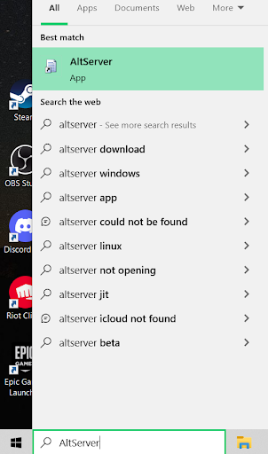
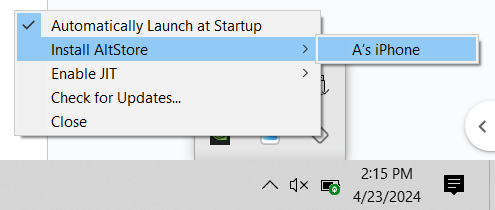
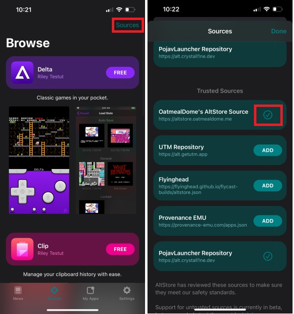
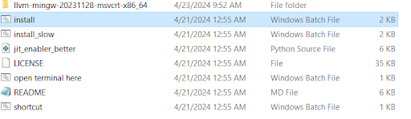
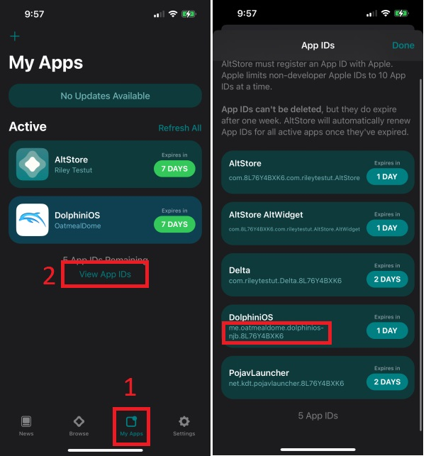
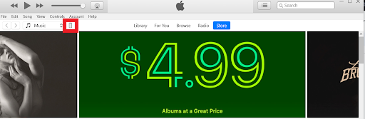
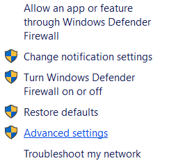
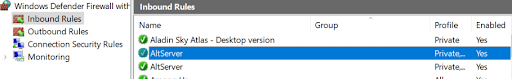

After experimenting with 4 different OS's, multiple phones, and countless github projects I have finally gotten Wii Sports running on my IPhone! Here is a basic tutorial. I didn't create any of the tools below, but I had to spend lots of time figuring out how to use them because many of them didn't have straightforward tutorials or had bugs that I had to find work-arounds for. If you enjoy this tutorial please let me know and share it. If you have any trouble please feel free to email about it :) Have fun!
What is AltStore and iOS17-JIT-WIN?
AltStore is an alternative app store for iOS that does not involve jailbreaking your phone. You can download it from safari in the EU, but in the US the only way to download it is by sideloading it onto your phone. Sadly it only stays installed on your phone for 7 days then you have to "refresh the apps" AltStore simulates an apple development engine so they can restrict how long you can run it for. iOS17-JIT-WIN only stays installed on your phone as long as it is in your system's RAM. This program pretends to be a XCode debugger and is able to enable JIT.
Part 1: Download Loading and Installing Altstore on your IPhone
1) Download iTunes and iCloud from Apple's website; links to the sites are below. It is important to download directly from Apple's website because it allows AltStore to edit the files easier than if downloaded from the Microsoft store. Make note of the install path of iTunes, if AltStore can not find the download location you can direct it manually.
iTunes: https://www.apple.com/itunes/download/win64
iCloud: https://updates.cdn-apple.com/2020/windows/001-39935-20200911-1A70AA56-F448-11EA-8CC0-99D41950005E/iCloudSetup.exe
2) Go through the sign in process of iCloud, it is not necessary to sign into iTunes, but it may help you do other steps faster later.
3) Plug your IPhone into your PC, if you see a popup asking you to trust device, trust it.
4) Download the AltStore installer from the link below.
AltStore: https://cdn.altstore.io/file/altstore/altinstaller.zip
5) Extract the files to a new folder and run "Setup.Exe" Allow all of the popups that appear.
6) Go to the windows search bar, then search for "AltServer and run the file as administrator.
7) Then go to the bottom right of your screen and open AltStore and click install AltStore then select your device. Then when prompted sign in with your Apple ID and password.
8) Now on your phone:
Go to Settings → General → VPN & Device Management → and trust your name
Then go to back to Settings → Privacy & Security → Developer Mode → and turn it on
Your phone will then prompt you to restart your phone. When it turns back on, enable developer mode.
9) Now while your phone is plugged into your PC you can download Apps from AltStore :) (if you are still not seeing AltStore on your phone, try to install it again and it should appear)
Part 2: Downloading Dolphin Emulator
Now to download Dolphin Emulator and obtain games ISO file
1) Open Altstore and in the brows menu at the top right click on scores.
2) Now add the Source "OatmealDOME's AltStore Source" and if you want minecraft Java edition you can also add "PojavLauncher Repository" (you will need a minecraft java account)
3) Then go download PojavLauncher and DolphiniOS. (Download DolphiniOS public beta if you have an Iphone 15) You will be prompted to sign into your iCloud account again.
4) Now put your Wii Sports ISO that you ripped from your wii sports disk in files
5) Now click the plus button in the top right of dolphin and select your ISO
Part 3: Enabling JIT on IOS 17+
Now you need to enable JIT on IOS. JIT stands for just-in-time decompling. Basically it turns the code from an app to code that can be run on your phone. Android has it enabled natively, but IOS doesn't. The only default iOS app that uses JIT is safari. Once JIT is enabled on an app it will only stay active as long as the app is not closed or overwritten in the RAM.
1) Download both python and iOS17-JIT-WIN from the links below. Make sure to check the box "Add to path" during python install. It will not work if you don't do this.
Python: https://www.python.org/downloads/
iOS17-JIT-WIN: https://github.com/fritzlb/iOS17-JIT-WIN/archive/refs/heads/main.zip
2) After downloading python and iOS17-JIT-WIN, unzip iOS17-JIT-WIN and run "install.bin" after it is installed it will prompt you to restart your PC.
3) Once your PC is back on, and your phone is plugged into your PC with iTunes open, run the file "Open Terminal Here.bin" in the iOS17-JIT-WIN folder
4) Then in the AltStore app go to My Apps → View App ID's → and then note the DolphiniOS app ID. Ex: me.oatmealdome.dolphinios-njb.[Some numbers and letters here]
5) Now in the terminal that you opened before, type in "python jit_enabler_better.py {Your App ID_id}" and run the file. I like to type it out in a different document and copy and pasting it in due to possible errors. If you encounter an error or bug here I will cover some below. If you still have problems, please reach out to me.
Ex: python jit_enabler_better.py me.oatmealdome.DolphiniOS-njb.8L76Y4BXK6
6) Once you see "done" in the terminal, then in the Dolphin Emulator app run the game!
Keeping Games updated/From getting uninstalled
Because we are using a test development platform to add these programs to our phones, Apple only lets us keep them for 7 days at a time before the downloads are removed. Typically to "refresh" the app you need to plug it back into your PC, but AltStore has a feature that will do this over WiFi.
1) Open the Itunes app on your PC
2) Go to the top left and click on the little button with an image of a phone
3) Scroll to the bottom and turn on "Sync with this phone over Wi-Fi" then click apply at the bottom

Now you should be able to download apps as long as you are on the same wifi as your PC running the AltStore app
If this is not working try
1) Open windows search bar and type "Windows Firewall" then open it
2) Next, select "Advanced Settings" on the sidebar
3) Now go to Inbound rules and scroll down to AltServer. Make sure it is enabled.
Now AltServer should work
Typical Bugs:
"Device is not connected"
If the terminal output begins with "device is not connected" unplug and plug back in your phone, and make sure to trust your device. If that does not work
1) Go to windows search
2) Search for "Device manager" and open it
3) Scroll down to "Universal Serial Bus Devices" and open it
4) Right click and uninstall both "Apple Mobile Device USB Composite Device(WeTest)" and "Apple Mobile Device USB Device" (Optional, but it may help to restart your computer at this point)
5) When your computer turn back on return to Part 3, step 5 and continue from there
"Can not find Itunes file" when installing AltStore
If the AltStore installer can not find the location where you installed iTunes
1) Find where you wrote down the install location of itunes (if you forgot to do this uninstall and reinstall iTunes in control panel)
2) Use the "Find directory" button and direct it to the file that you noted earlier
If you are encountering an issue that cannot be solved from this, try to use the links below for more specific problems
https://faq.altstore.io/getting-started/troubleshooting-guide
https://github.com/fritzlb/iOS17-JIT-WIN?tab=readme-ov-file